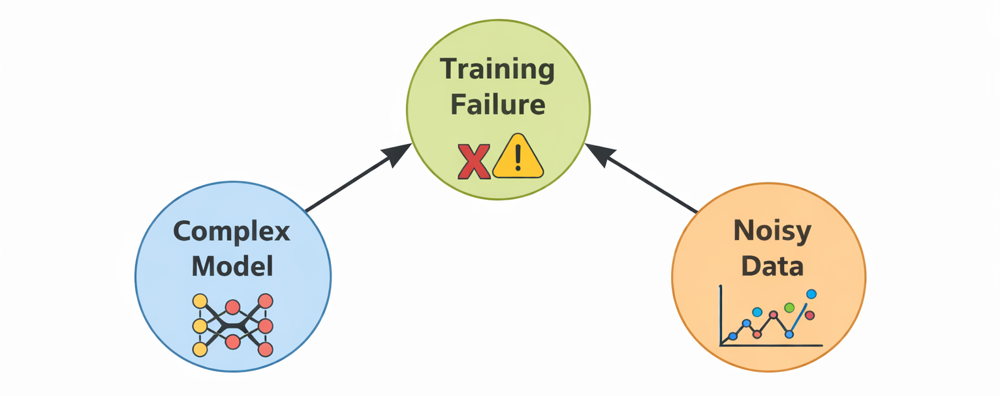
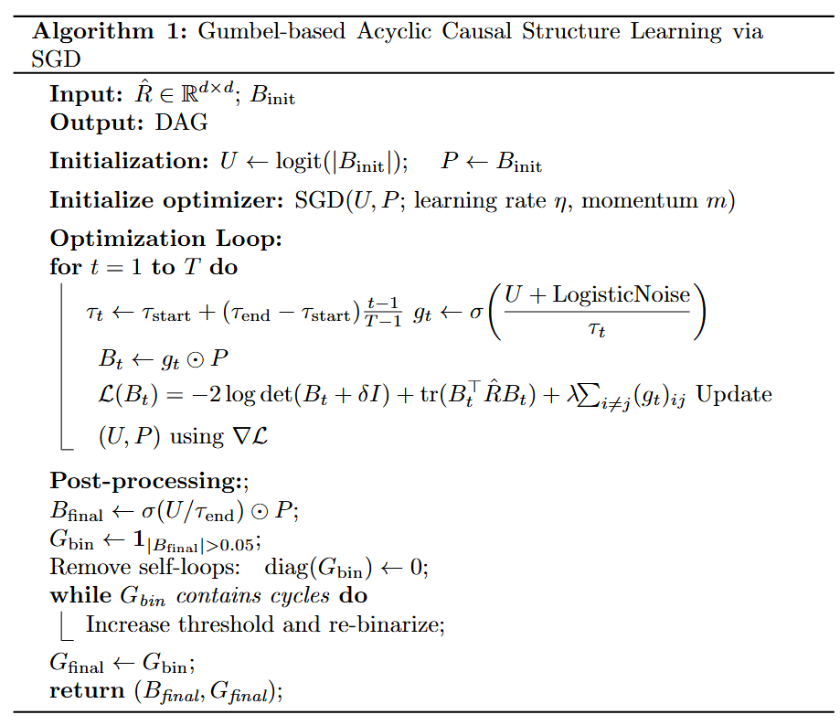
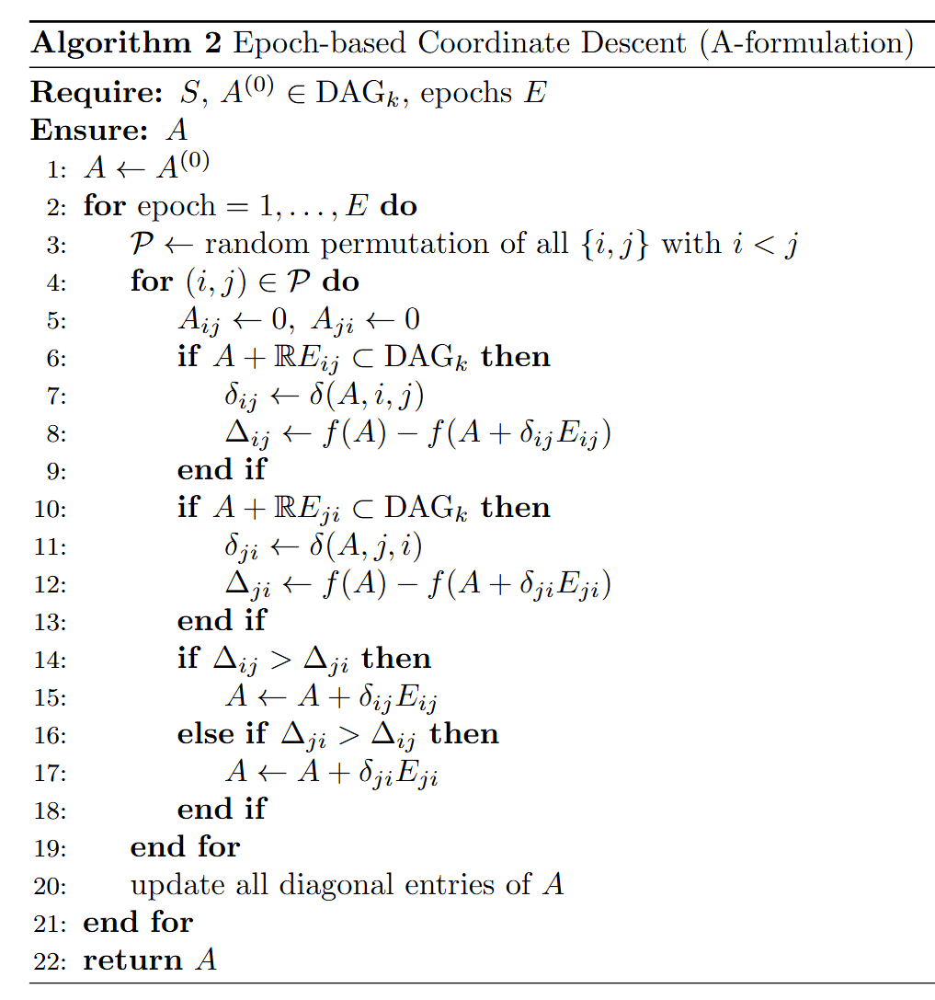

DAG-Constrained Coordinate Descent for Causal Discovery
Traditional statistical analysis and machine learning primarily focus on revealing correlations among variables. However, for understanding complex socio-economic or biological phenomena, as well as for policy design and decision-making support, it is essential to identify the causal relationships underlying the data.
Within this context, causal inference aims to estimate intervention and counterfactual effects, while causal discovery seeks to estimate causal structures (directed acyclic graphs; DAGs) directly from observational data.
Recently, approaches that formulate causal discovery as a continuous optimization problem—notably exemplified by NOTEARS—have attracted much attention. These methods relax the combinatorial search of DAGs into a differentiable optimization framework. However, most existing approaches employ an \(L_1\)-norm penalty to promote sparsity, which has been shown to lack consistency over the Markov equivalence class of the true graph. Conversely, the \(L_0\)-norm penalty offers theoretical consistency but is non-continuous and thus difficult to optimize via gradient-based methods.

Our method optimizes the structure by updating one coordinate (edge) at a time. Unlike gradient-based methods that move along the steepest descent in continuous space, Coordinate Descent (CD) explores the discrete structure space by making locally optimal, discrete moves that are guaranteed to stay within the DAG manifold.
In each Epoch, the algorithm performs a random permutation of all unordered node pairs $\{i, j\}$. For each pair, we evaluate two potential directed edges ($i \to j$ and $j \to i$). The update is only accepted if it satisfies the acyclicity constraint and provides a larger objective decrease than the alternative direction.

By iterating through epochs and diagonal updates, the algorithm ensures that every potential causal link is revisited under the context of the currently estimated graph. This iterative refinement allows the model to escape local minima that often trap naive greedy search algorithms.

| Index | CD (Ours) | CD_L0 (Ours) | GOLEM_EV | GOLEM_NV |
|---|---|---|---|---|
| 1 | 0.79 | 0.78 | 0.60 | 0.50 |
| 2 | 0.81 | 0.64 | 0.56 | 0.57 |
| 3 | 1.00 | 0.88 | 1.00 | 1.00 |
| 4 | 0.74 | 0.38 | 0.02 | 0.20 |
| 5 | 0.61 | 0.45 | 0.01 | 0.03 |
| 6 | 0.84 | 0.84 | 0.35 | 0.23 |
| 7 | 0.52 | 0.36 | 0.00 | 0.00 |
| 8 | 0.81 | 0.56 | 0.06 | 0.00 |
| 9 | 0.60 | 0.68 | 0.08 | 0.00 |
The CD method shows superior performance in recovering true causal links, particularly in high-sparsity scenarios where GOLEM struggles with soft acyclicity penalties.
従来の統計解析や機械学習は、主に変数間の「相関関係」を捉えることに重点を置いてきました。しかし、複雑な社会経済現象の理解や意思決定支援においては、データに潜む「因果関係」を特定することが不可欠です。本研究では、観測データから因果構造（DAG）を直接推定する「因果探索」に焦点を当てます。
近年、NOTEARSに代表される連続最適化による因果探索が注目されていますが、既存手法の多くは$L_1$ノルムペナルティによるバイアスや、マルコフ同値類上での一貫性の欠如という課題を抱えています。本研究では、$L_0$型スパース性を維持しつつ、厳密なDAG制約下で最適化を行う新しい座標降下法を提案します。
提案アルゴリズムは、全変数を同時に更新するのではなく、各エッジを逐次的に更新します。各エッジの更新は、他のエッジの状態を固定した上での一次元最適化問題として解かれます。
エポックベースの更新： 毎エポックごとにノード対の順序をランダムに入れ替え（Permutation）、因果方向の有無と向きを判定します。これにより、局所解に陥るリスクを低減し、より真の構造に近いグラフへと収束させることが可能になります。
提案手法は、特にスパース性が高いデータセットにおいて、既存のGOLEM等の手法を大きく上回る復元精度を達成しました。座標降下法による離散的な探索が、連続最適化におけるバイアスを効果的に回避していることが示唆されます。